어린이 명작 도서관
우리반 아이들을 위한
맞춤형 독서 솔루션
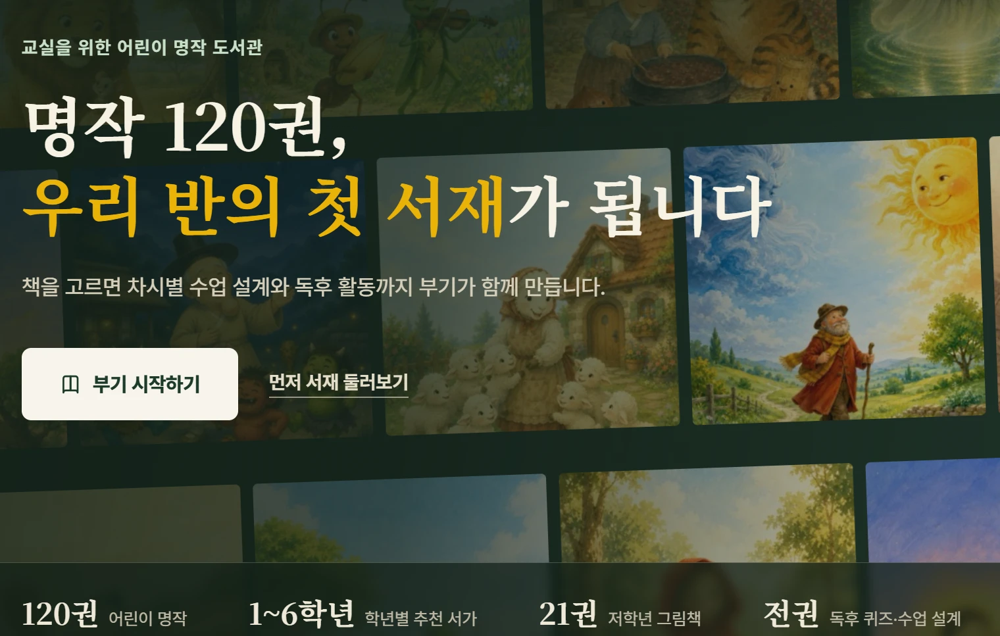
bookie.io.kr 로 접속해 보세요.
차례
부기를 만든 이유
아이들이 책읽기를
싫어하는 이유
생각해 보셨나요?
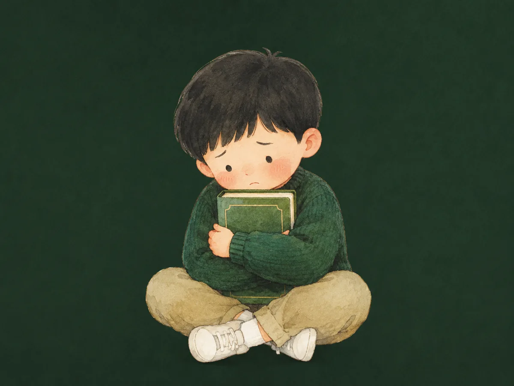
책을 읽고 싶지만 책을 읽지 못하는 아이들을 위하여 만들었습니다.
한 쪽에 모르는 낱말이 3~4 개만 나와도 아이는 거기서 멈춥니다. 내용을 이해하지 못하니 재미가 없고, 머뭇거리다 결국 말합니다 “재미없어 나 안해 ㅠㅠ”
독서의 중요성은 너무나 잘 알지만 스무 명이 넘는 교실에서 모든 아이들을 신경쓰기란 불가능의 영역입니다.
아이들이 읽기 싫고, 읽는 것이 재미 없는 것은 이런 이유가 아닐까? 하는 고민에서 시작했습니다.
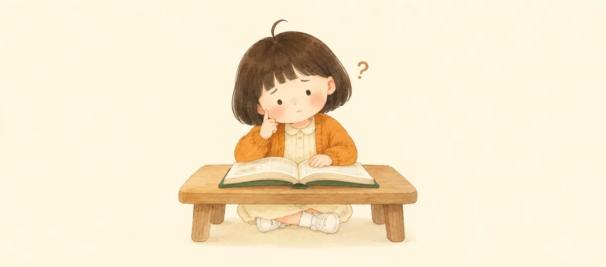
부기를 만든 이유
AI 시대입니다. 2015년 알파고의 등장으로 이름을 알리더니 chatGPT가 나온 지 3년 만에 우리의 삶은 생성형 AI 없이는 못 살만큼 정말 많이 바뀌었습니다.
새로운 기술이 들어오면 부작용을 경험합니다. AI는 학교에서 아이들이 스스로 답을 찾고, 고민하는 능력과 시간을 빼앗기도 했습니다. 그래서 부기는 아이들이 온전히 책을 읽고 생각할 수 있도록 함과 동시에 적절한 AI 사용에 관한 선생님의 고민을 담았습니다.
아이들이 독서를 통해 자신의 생각하는 힘을 길러 갈 수 있도록 기준을 정했습니다.
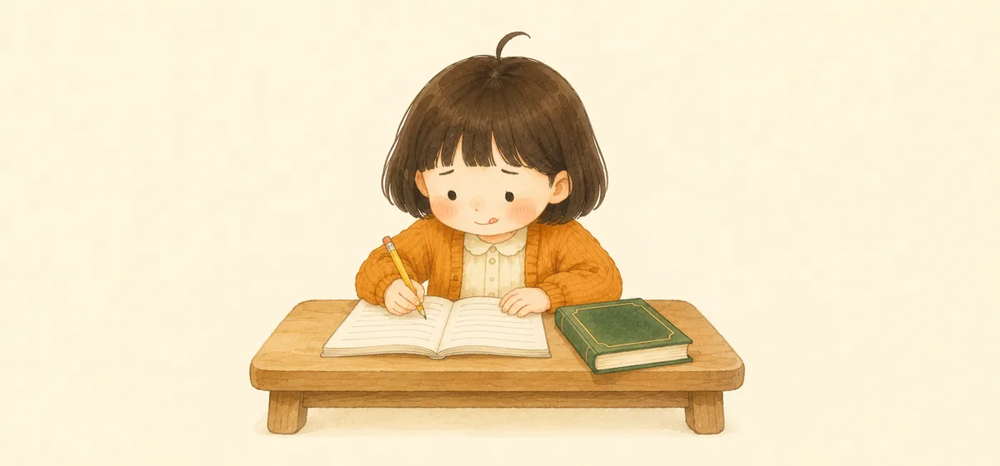
부기를 만든 이유
우리반 아이들 중 문해력에 어려움을 겪는 아이들은 얼마나 있을까요?
평균적으로 한 반에 3~4명은 어려움을 겪을 것입니다.
PISA는 만 15세 학생의 읽기 성취를 살펴보는 국제 조사입니다. 2022년 우리나라 평균은 515점으로 OECD 상위권이었습니다. 하지만 같은 조사에서 하위 성취수준 학생은 14.7%였습니다.
OECD는 2수준을 사회에 온전히 참여하는 데 필요한 기초 수준으로 봅니다. 보통 길이의 글에서 중심 생각을 찾고, 눈에 잘 띄지 않는 정보를 연결해 기본적인 추론을 할 수 있는 정도이지요.
그보다 낮은 수준이라면 교과서 한 단락을 읽고 무엇이 핵심인지 스스로 짚어 내는 데 어려움을 겪을 수 있습니다. 스물네 명 학급으로 보면 3~4명꼴입니다.
부기를 만든 이유
1년에 책을 한 권이라도 읽은 사람
종이책·전자책·오디오북을 모두 더한 종합독서율입니다.
1년에 읽은 권수
독서가 삶에 유용하다는 것을 체감하고 성인이 된 사람과 그렇지 않은 사람의 차이는 아마 AI디지털 시대에 더욱 벌어질 것입니다.
부기를 통해 이러한 독서의 즐거움을 느끼게 해주고자 합니다.
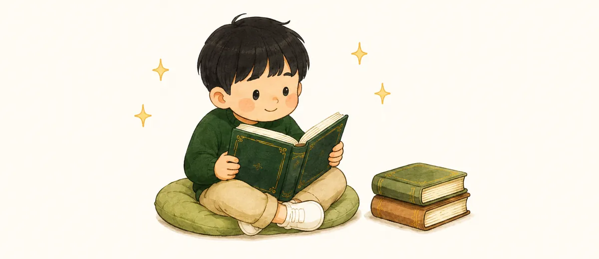
부기를 만든 이유
글 전체에서 얼마나 낱말을 알아야 할까요?
글에 나온 낱말을 어느 정도 알아야 사전 도움 없이 읽을 수 있는지를 살핀 연구가 있습니다. 80%를 알 때는 충분히 이해한 사람이 없었고, 90~95%에서도 대부분이 어려움을 겪었습니다. 98%쯤 알아야 도움 없이 읽을 수 있었습니다. 몇 개의 낱말의 뜻만 몰라도 글읽기가 어렵다니 놀랍지 않나요?
모르는 낱말이 2%라면 쉰 개에 하나꼴입니다. 한 쪽에 이백 낱말이 있다면 네 개 정도입니다. 1쪽에서 말한 '서너 개'가 바로 이 정도입니다.
부기를 만든 이유
잘 읽는 아이와
못 읽는 아이의
학습 격차를
고민해 봅시다.
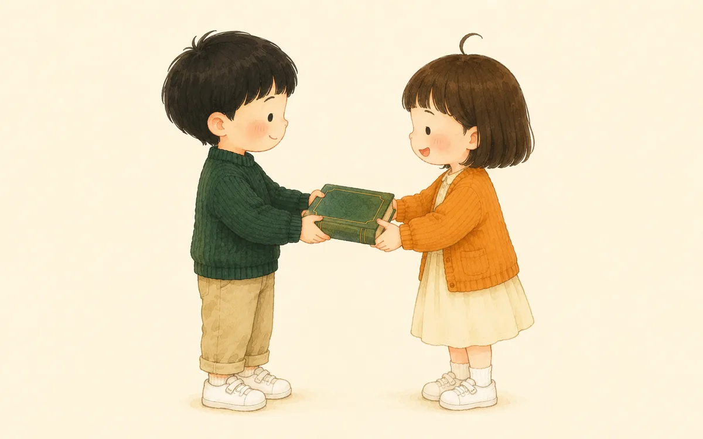
읽기의 마태 효과: Keith E. Stanovich, 1986
스타노비치는 배경지식이나 읽기 능력에 따라서 학습 격차가 점점 벌어지는 현상을 발견했습니다. 1986년 이 현상을 ‘마태 효과’라고 불렀습니다. 마태복음의 “무릇 있는 자는 받아 풍족하게 되고”라는 구절에서 이름을 따온 이론입니다.
왜냐하면 잘 읽는 아이는 더 많이 읽고, 읽는 만큼 어휘와 배경지식이 쌓여 다음 책이 쉬워집니다. 읽기가 어려운 아이는 점점 더 격차가 벌어집니다. 느끼지 못하는 사이에, 어려움을 느끼는 중에 별다른 도움이 없으면 학년이 올라갈수록 차이가 커질 수 있습니다.
선생님들이 경험적으로 “처음부터 잘 읽던 아이만 계속 잘 읽는다”고 느끼셨다면, 그것은 현실에 가깝습니다.
부기를 만든 이유
한 권을 끝까지 읽으면 무슨 일이 생길까요?
연구진은 이것을 '상승 나선'이라 불렀습니다.
유아부터 대학생까지를 다룬 99편의 연구를 모아 분석한 결과입니다. 많이 읽는 사람일수록 읽기 능력이 높았고, 읽기 능력이 높을수록 다시 더 많이 읽었습니다. 잘 읽어서 더 읽고, 더 읽어서 더 잘 읽게 되는 것이지요.
그래서 부기는 한 권을 끝까지 읽는 경험에 초점을 맞췄습니다. 끝까지 읽어 본 아이가 다음 책을 스스로 펼칩니다. 그 첫 한 권을 만들어 주고 싶었습니다.
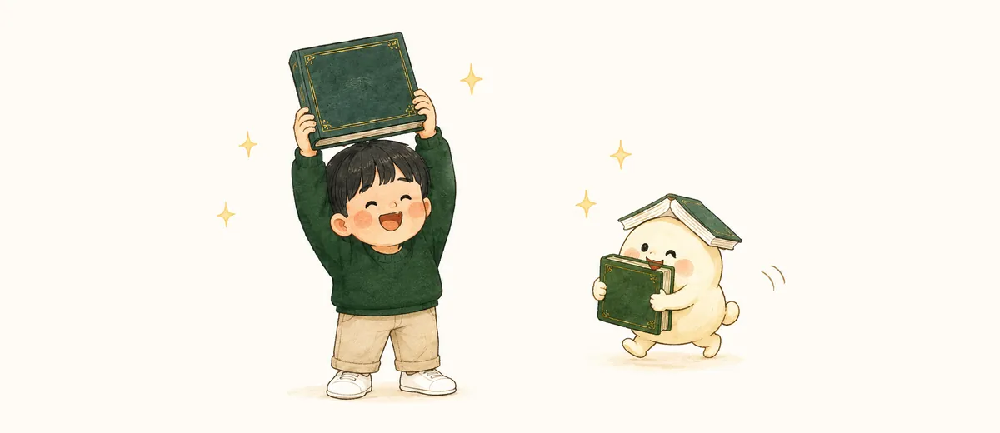
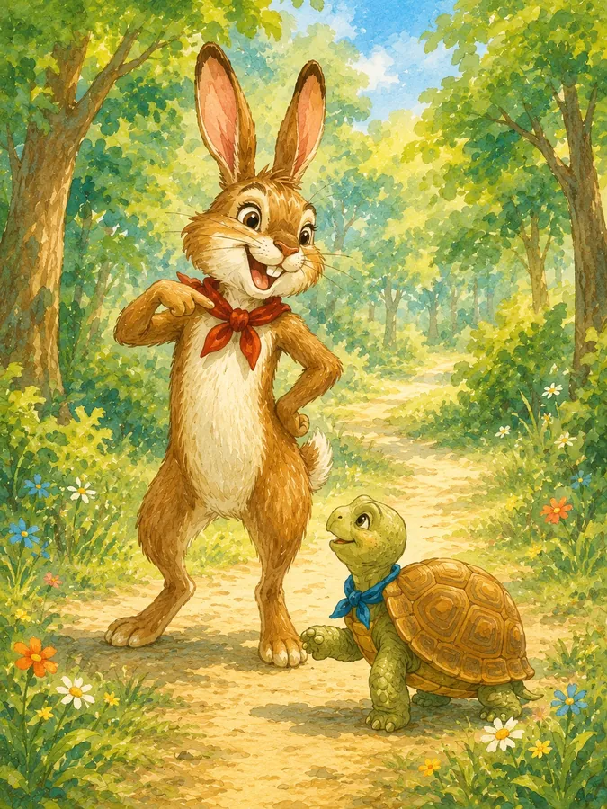
부기 학생 기능 소개
왼쪽은 실제 부기 리더와 같은 화면입니다. 언어와 글자 크기를 직접 바꿔 보세요. 밑줄 친 낱말을 누르면 뜻풀이도 뜹니다.
쪽마다 저학년 눈높이의 삽화가 함께 실려 있습니다. 글이 어려운 아이는 그림으로 장면을 먼저 잡습니다. 그러면 다음 문장이 눈에 들어오지요.
부기 학생 기능 소개
낱말 하나 찾겠다고 읽던 화면을 벗어나면 이야기의 흐름이 끊깁니다. 돌아와도 어디까지 읽었는지 잊어버리고요. 그래서 뜻을 그 자리에서 바로 보게 했습니다.
뜻풀이도 학년 눈높이에 맞춥니다. 뜻을 보러 갔다가 거기서 또 모르는 낱말을 만나면 아무 소용이 없으니까요.
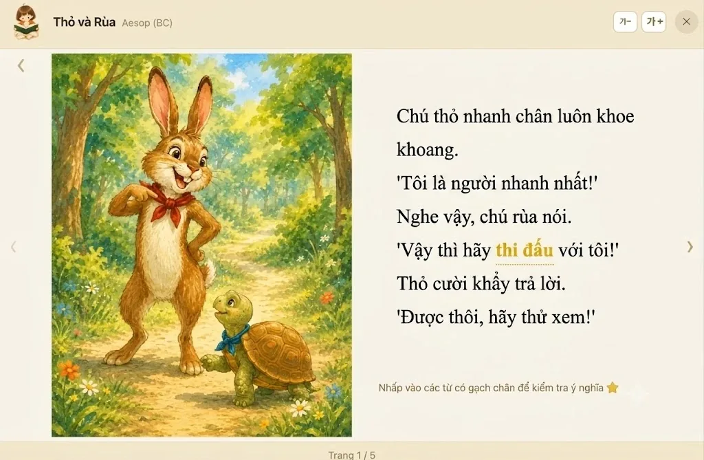
부기 학생 기능 소개
우리반 중도입국 학생도 같은 시간에 같은 대목을 읽습니다.
그 학생만을 위한 자료를 따로 만들지 않아도 됩니다. 혼자 다른 글을 붙들고 있는 대신 친구들과 같은 이야기를 읽으니, 수업이 끝난 뒤에도 같은 장면을 두고 생각을 나눌 수 있고요.
그럼 나랑 시합하자!
Vậy thì hãy thi đấu với tôi!「토끼와 거북이」 같은 대목 — 거북이가 토끼에게
부기 학생 기능 소개
같은 「빨간 구두」의 같은 대목입니다. 원문 · 재구성 · 교훈을 눌러 비교해 보세요.
원문은 원작의 문장과 호흡을 살린 글이고, 재구성은 같은 장면을 학년 눈높이로 다시 쓴 글입니다. 어느 쪽을 보여 줄지는 아이의 진단 결과가 정합니다. 같은 반 아이들이 저마다 다른 글을 읽어도 이야기는 하나입니다.
부기 학생 기능 소개
인물에게 무엇을 물을지 고르려면 이야기를 알고 있어야 합니다. 질문을 고르는 동안 아이는 앞에서 읽은 장면을 한 번 더 떠올리게 되지요.
왼쪽에서 직접 말을 걸어 보세요. 저학년 아이들은 등장인물에게 친구처럼 말을 겁니다. 무엇을 묻는지, 어떤 말을 붙이는지 보면 그 아이가 인물을 어떻게 받아들였는지 드러납니다.
특허 등록 아바타 기반 도서 등장인물 대화형 독서 활동
특허 출원 준비중 작가 페르소나 기반 감정 연동형 독서 담화 시스템
토끼야, 낮잠 잘 때 무슨 생각 했어?아이가 고를 수 있는 질문 가운데 하나입니다. 토끼는 "금방 일어나서 뛰면 된다고 생각했어… 그게 실수였지"라고 답합니다.
부기 학생 기능 소개
시험을 따로 치르지 않습니다. 평소 독서활동 기록만으로 문해력 6영역, 사고력 6영역을 봅니다. 아이는 진단받는 줄도 모릅니다.
왼쪽에서 단계를 눌러 보세요. 단계에 따라 「빨간 구두」가 제시되는 방식이 달라집니다. 씨앗 단계는 두세 문장으로 줄인 재구성부터, 숲 단계는 원문과 확장 읽기까지 갑니다.
새로운 친구의 이름을 지어 주세요
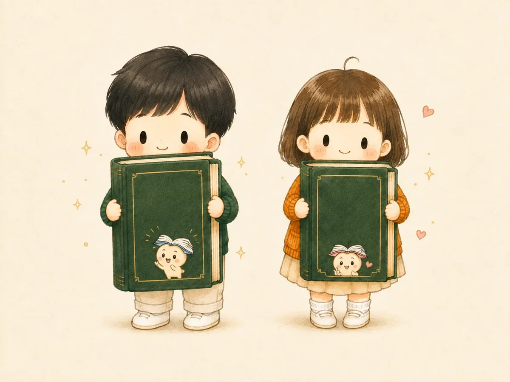
부기 학생 기능 소개
책을 끝까지 읽으면 그 책의 소품을 하나 얻습니다. 「양치기 소년」은 지팡이, 「개미와 베짱이」는 바이올린. 책마다 다릅니다.
얻은 소품은 자기 캐릭터에 답니다. 캐릭터에 달린 소품만 봐도 그 아이가 어떤 책을 읽었는지 알 수 있고요. 처음 들어온 아이는 왼쪽처럼 이름부터 짓습니다.
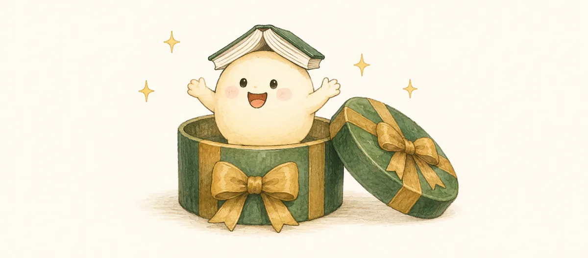
부기 학생 기능 소개책마다 다른 소품
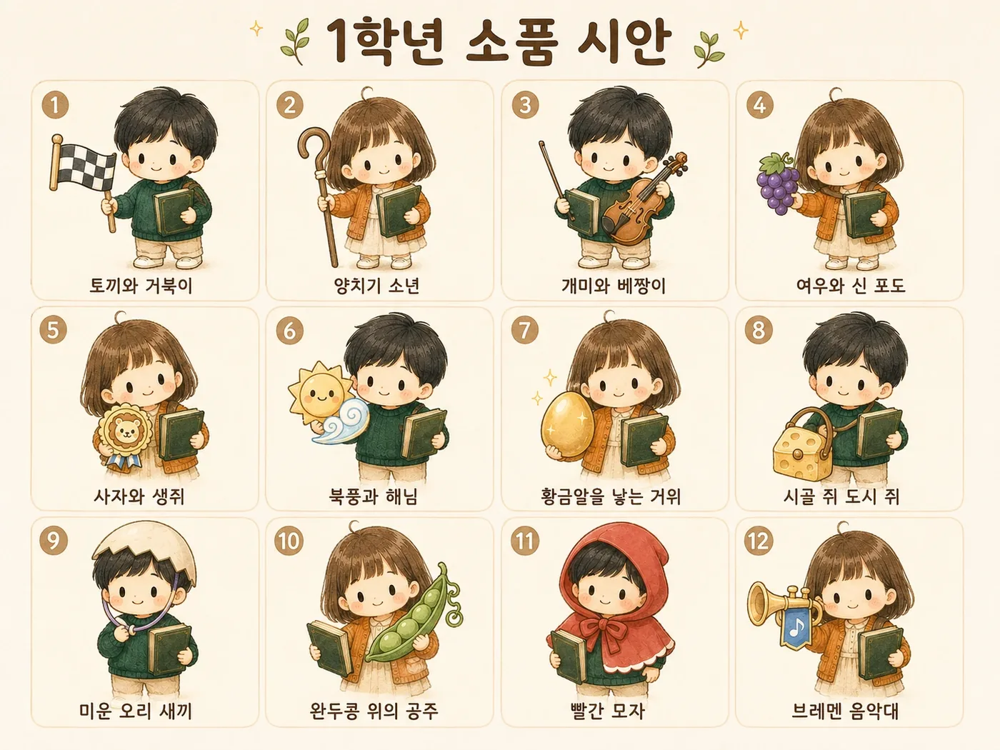
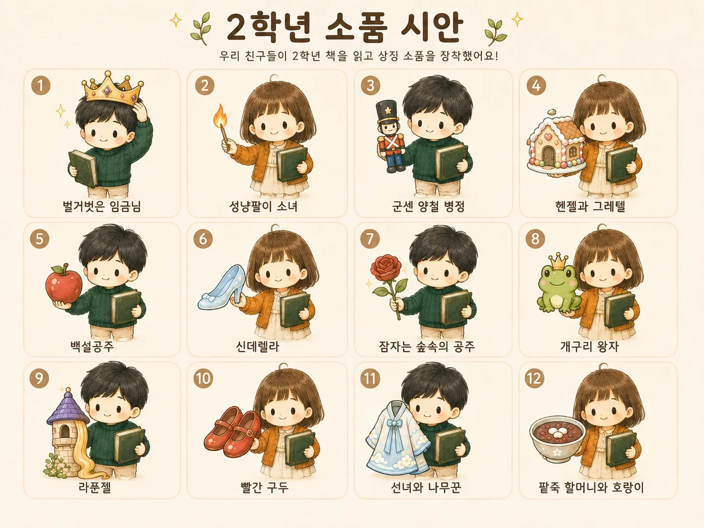
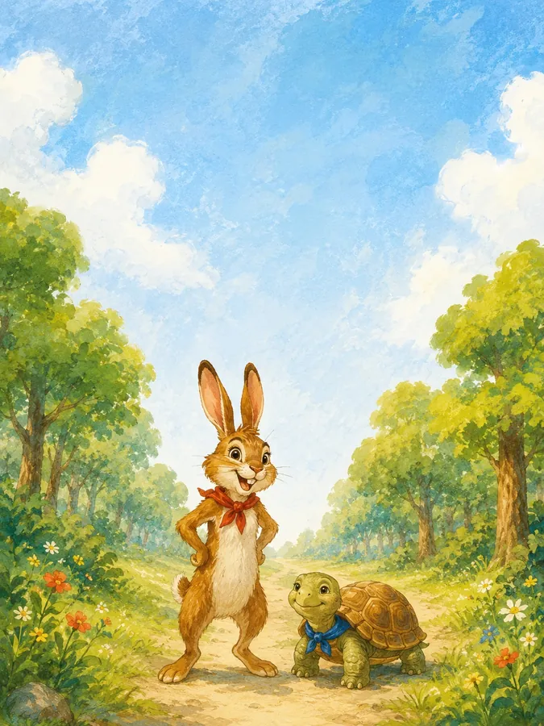
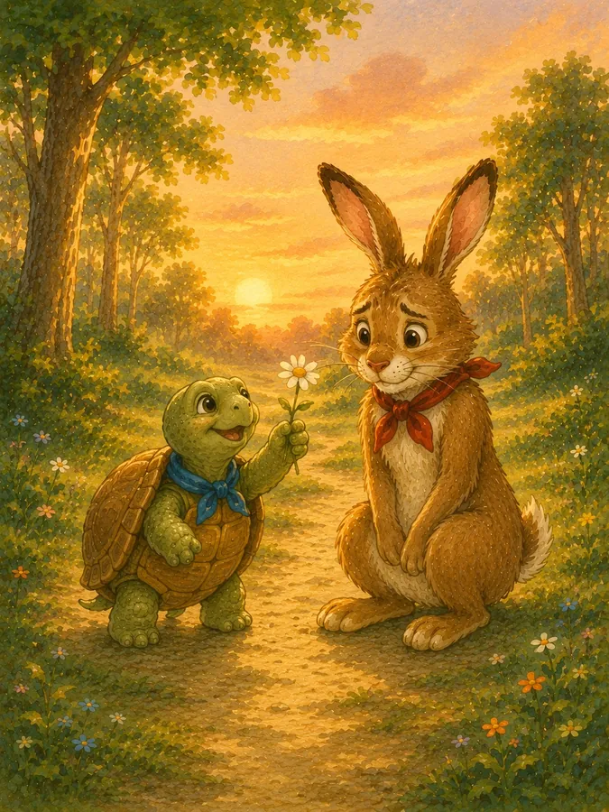
빈 칸은 일부러 남겨 둡니다. 읽은 책이 늘어나는 모습을 책장에서 바로 확인할 수 있습니다.
부기 학생 기능 소개
읽은 책과 그때 남긴 글, 부기와 나눈 대화가 서고에 차곡차곡 쌓입니다.
계정은 6년 내내 하나입니다. 1학년 때 서툰 글씨로 남긴 한 줄을 6학년이 되어 다시 꺼내 볼 수 있죠. 책장의 빈 칸은 다음 책이 들어올 자리고요.
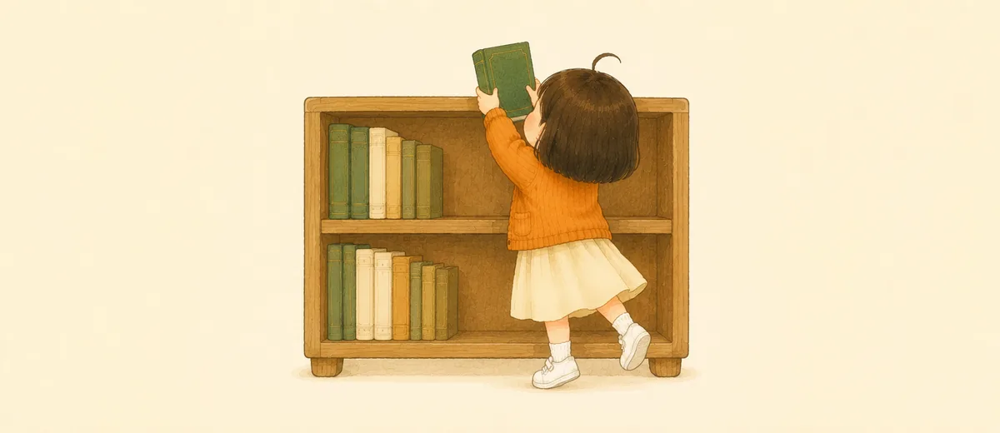
좋아요는 있지만 순위는 없습니다. 친구들이 만든 그림과 글을 편하게 둘러볼 수 있습니다.
부기 학생 기능 소개
그림이나 독후감을 사진으로 찍어 올리면 같은 반 친구들이 함께 봅니다.
좋아요는 남길 수 있지만 순위는 매기지 않습니다. 누가 몇 등인지가 아니라 친구가 어떤 장면을 골랐고 무슨 생각을 했는지, 거기를 보게 하고 싶었습니다.
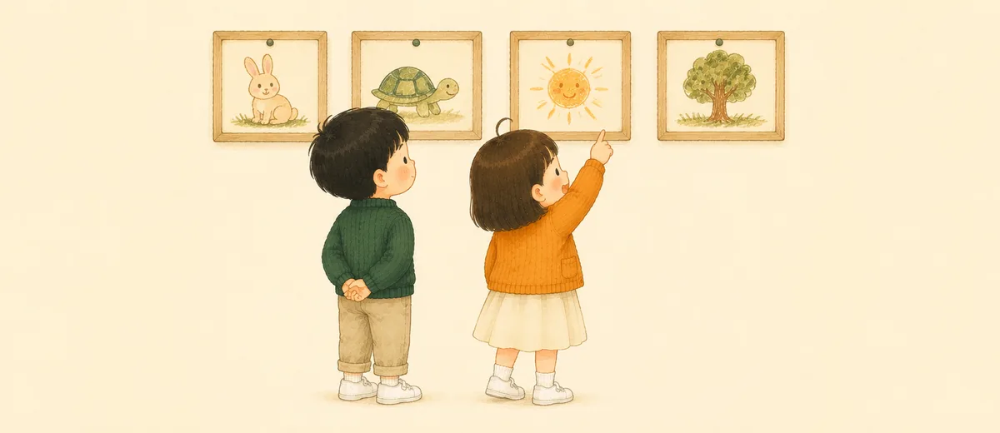
부기 학생 기능 소개
아이의 반응을 보고, 작가가 말을 고릅니다
부기 학생 기능 소개
지금 아이는 토끼와 거북이에게, 카렌에게 말을 겁니다. 다음으로 준비하는 상대는 그 이야기를 쓴 작가입니다. 안데르센은 왜 카렌에게 빨간 구두를 신겼을까요? 그 질문을 아이가 직접 던지게 하려 합니다.
여기에 한 가지를 더 붙입니다. 아이가 어디서 멈추고 어디를 다시 읽는지 보고, 질문의 수준과 설명의 길이, 말투를 그 자리에서 바꿉니다. 막혀 있으면 풀어 주고, 잘 따라오면 한 걸음 더 밀어 주고요.
특허 출원 준비중 작가 페르소나 기반 감정 연동형 독서 담화 시스템
수업 구성을 골라 보세요
부기 교사 기능 소개
수업 시간과 학급 상황에 맞는 구성을 고르면 차시별 활동이 펼쳐집니다. 온책읽기 8차시, 국어수업 4차시, 그림책 3차시, 아침활동 4차시 가운데 고르시면 됩니다.
왼쪽에서 직접 해 보세요. 필요한 활동만 골라 순서를 바꾸고, 선생님이 쓰시던 활동지나 PPT도 함께 넣을 수 있습니다. 수업을 짜는 자리는 선생님 몫으로 그대로 두었습니다.
부기 교사 기능 소개차시 PPT와 과정안
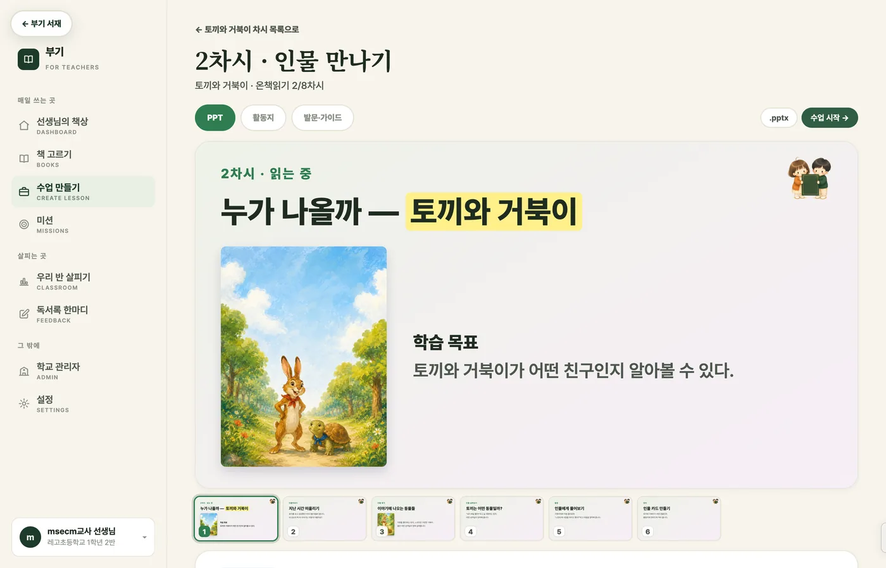
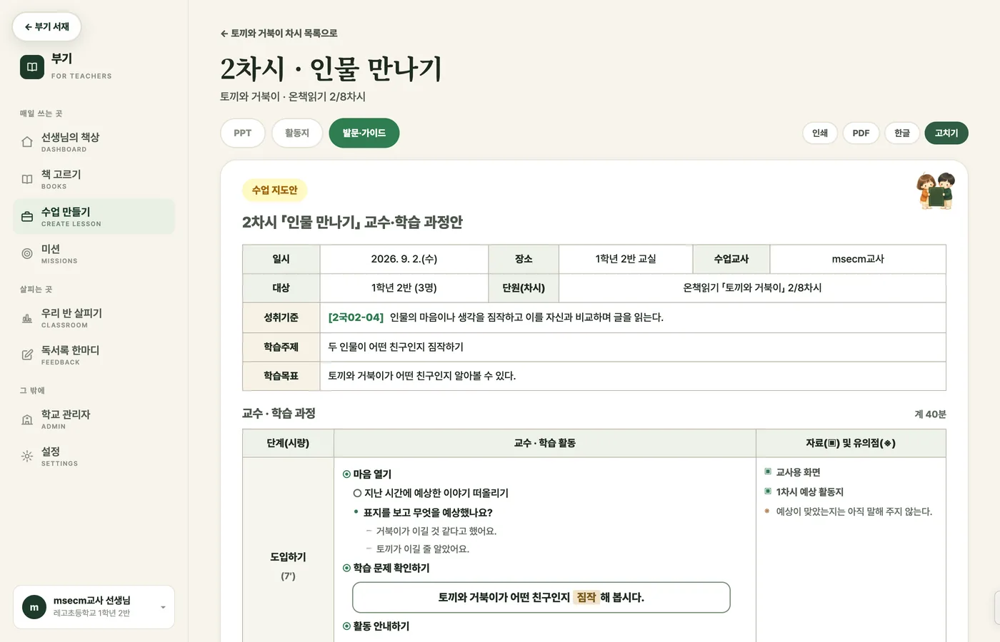
우리 반 입장 코드를 입력하세요
숫자 여섯 개를 눌러 보세요
부기 교사 기능 소개
1학년 스무 명에게 아이디와 비밀번호를 나눠 주고 로그인까지 도와주다 보면 첫 시간이 그냥 지나갑니다. “선생님 비밀번호 뭐예요?” 소리가 교실을 돕니다. 부기는 그 단계를 뺐습니다.
학급을 만들면 여섯 자리 입장 코드가 나옵니다. 그 숫자를 칠판에 띄우면 끝입니다. 이메일도, 비밀번호 재발급도 없습니다. 왼쪽에 아무 숫자나 넣어 보세요.
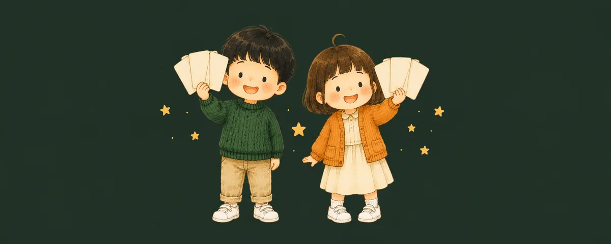
눌러서 바꿔 보세요. 기본값은 닉네임입니다.
부기 교사 기능 소개
완독 권수, 연속 독서일, 즐겨 읽는 분야가 아이별로 정리됩니다. 상담 주간에 따로 옮겨 적지 않아도 되고요.
기본 화면에는 닉네임이 보이고, 실명은 선생님만 확인할 수 있습니다. 왼쪽에서 눌러 바꿔 보세요.
부기 관리 기능 소개
학교를 누르면 학급이 보이고, 학급을 누르면 학생별 기록까지 들어갑니다. 학교에서 실적을 따로 모아 올리지 않아도 독서 기록이 그대로 반영됩니다.
선생님이 쓰신 관찰노트와 감정일기는 이 화면에서 볼 수 없습니다. 관리자는 조회만 할 수 있고, 담당 학교가 아닌 자료는 브라우저로 전송되지 않습니다.
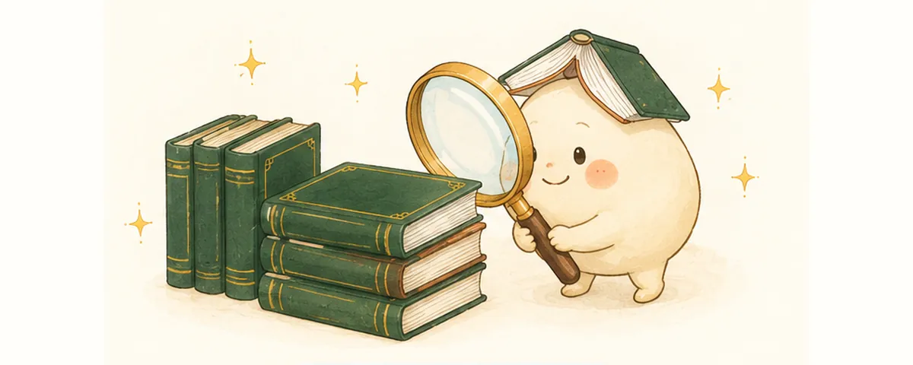
사용 후기와 신청
이미 부기를 쓰고 계신 선생님은 왼쪽에 후기를 남겨 주세요. 수업 사진도 몇 장이든 함께 올리실 수 있습니다. 잘된 점보다 불편했던 점이 저희에게는 더 쓸모가 있습니다.
아직 안 써 보셨다면 아래 QR로 시범 사용을 신청해 주세요. 접수 내용을 확인한 뒤 테스트 계정과 활용 가이드를 메일로 보내 드립니다.
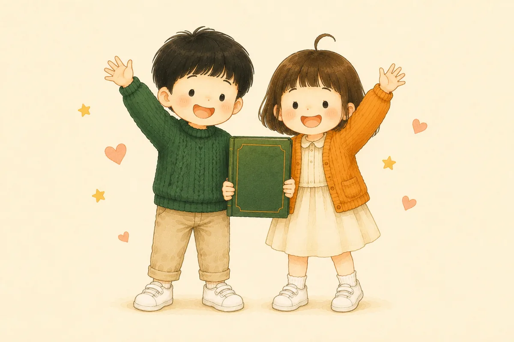
아이들에게 좋은 영향으로 남기를 바라며 만들었습니다. 문해력에도 조금은 보탬이 되었으면 하고요. 시범 사용에 함께해 주실 선생님을 기다립니다.
forms.gle/sUdhtbvTSPtfGWwG7